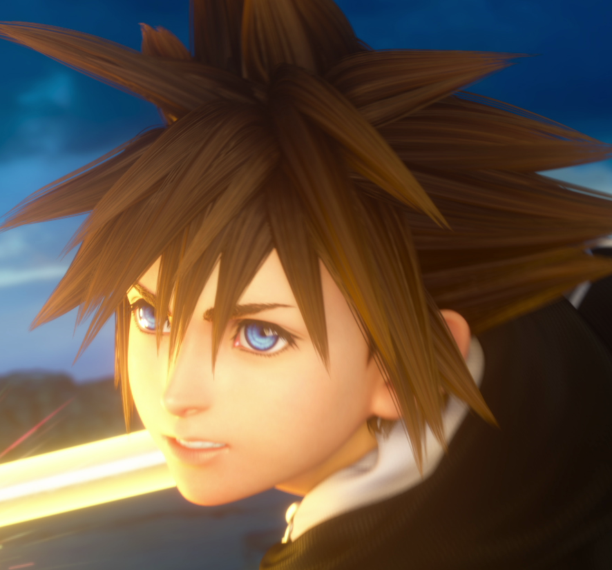
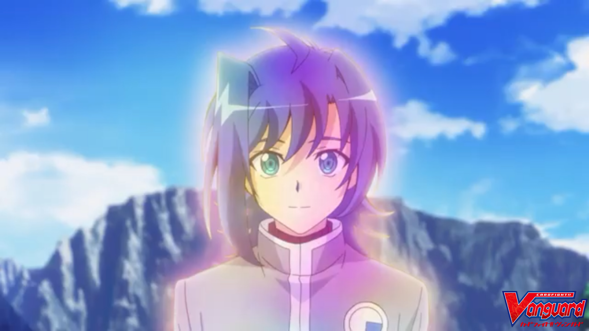
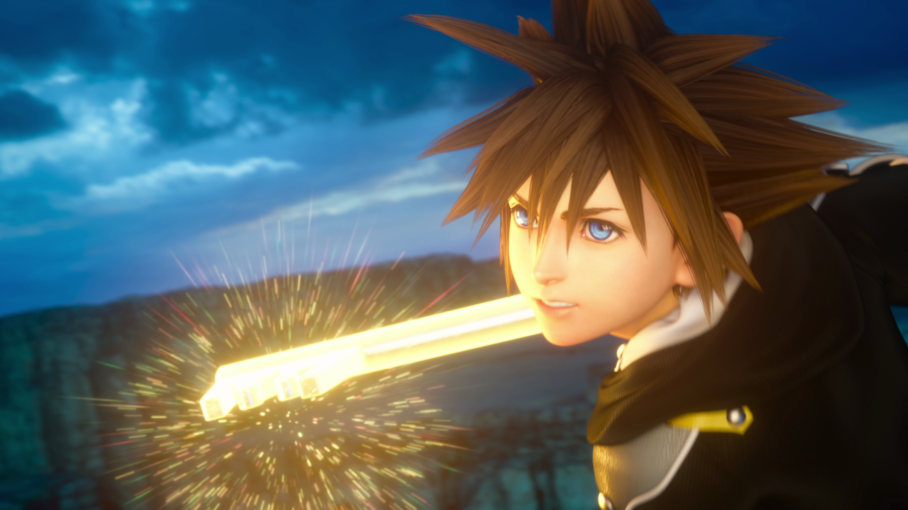
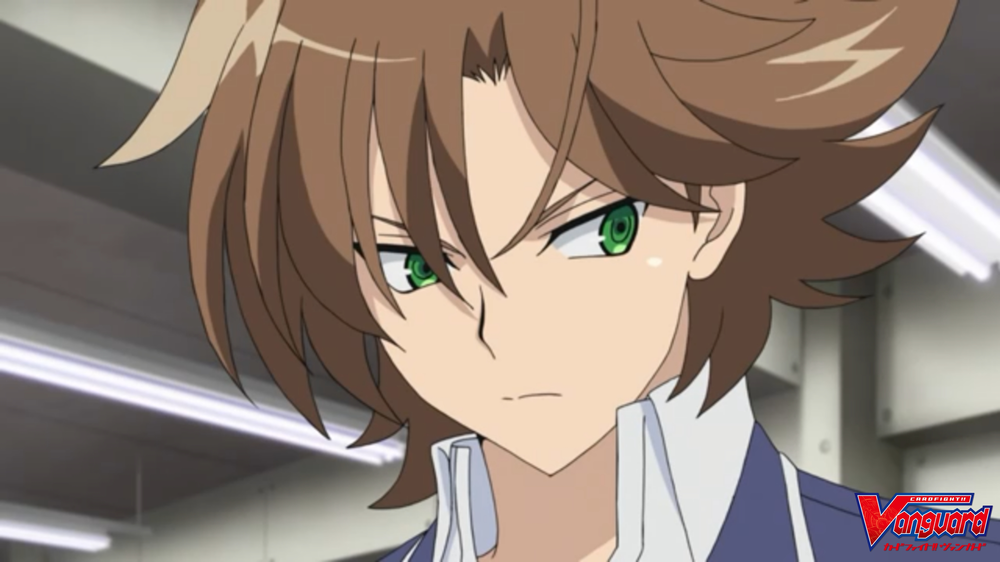

#aichixsora

Name
My name is Amir Asyraaf as regular person, but in gaming environment, I rather call myself as Aichi X Sora as gaming nickname. I create the name by combining 2 name from my favourite main characters from the anime, Cardfight Vanguard and my favourite game Kingdom Hearts 3. About the my favourite characters, I will show it later.
My Favourite Character

1. Aichi Sendou
Aichi Sendou is the main protagonist from all the Cardfight Vanguard Series that I watched. He is a somewhat shy and timid young man who wishes to be a Vanguard Fighter, but has never had the chance to have a real fight until his second encounter with Kai. When starting to play Vanguard, he believes more in himself, becoming a powerful Vanguard Fighter.
More information about Aichi Sendou

2. Sora
Sora is the main protagonist from all the Kingdom Hearts game. Like most typical heroes, Sora is brave and heroic, impulsively risking his own life for people he doesn't know and is loyal to a fault. Despite everything that he has endured throughout his journey, Sora retains his upbeat and optimistic attitude. He shows little tolerance for cowardice and selfishness but is ultimately forgiving of those that are sorry for their actions. Sora has a remarkable capacity to forgive, even to those who have harmed him and his friends.
More information about Sora
3. Toshiki Kai
Toshiki Kai is the deuteragonist in the Cardfight Vanguard series animeKai is a serious person and doesn't like to joke around like other people his age. He doesn't talk much or to anyone. When cardfighting, he is shown to be more serious and confident on winning the game without any need of support. Despite his selectively mute personality, he has a best friend, who is Miwa. However, after his cardfight with Aichi, he is more social and nicer than his original series counterpart.
More information about Toshiki Kai